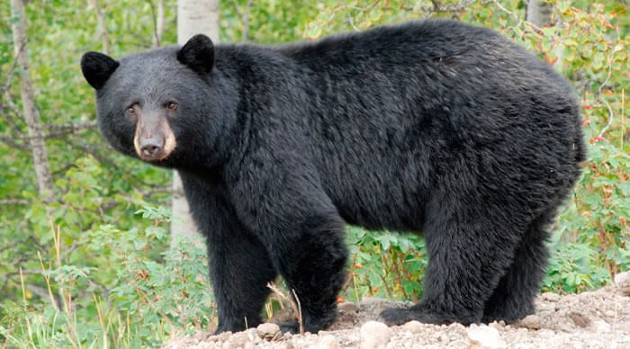

O Urso-negro (Ursus americanus), também conhecido como baribal, tem pelagem de cor negra, marrom, bege ou branca. Além disso, sua aparência impõe grandeza e ferocidade.
É uma das espécies de ursos mais comuns e emblemáticas da América do Norte, especialmente encontrada no Canadá e Estados Unidos, ao longo de montanhas, planícies, e algumas áreas pantanosas.
Além de seu comportamento solitário de busca por alimento, os ursos negros americanos também são onívoros. Eles têm uma dieta diversificada, que inclui tanto plantas, como frutas, nozes e ervas, quanto carne, como peixes, insetos e pequenos mamíferos. Eles também podem se alimentar de lixo e de outras fontes de alimento humano, o que leva a conflitos entre pessoas e ursos. Para proteger seus territórios e alimentos, esses ursos podem mostrar agressividade e atacar, especialmente se sentirem uma ameaça. No entanto, o urso negro americano geralmente evita interações com humanos e prefere ser deixado em paz em seu habitat natural.

Ordem: Carnivora
Família: Ursidae
Gênero: Ursus
Espécie: Ursus americanus